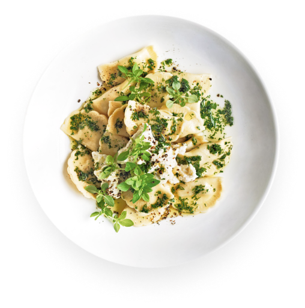
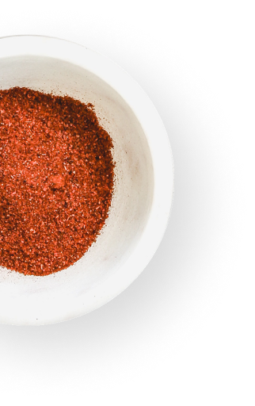
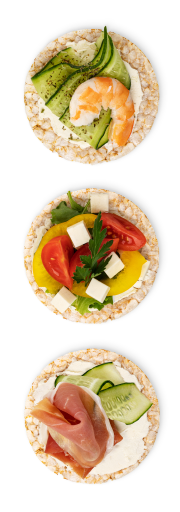
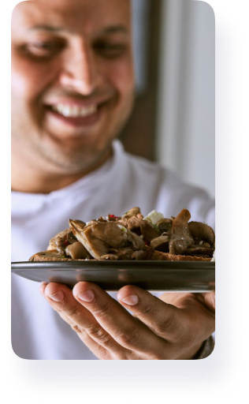
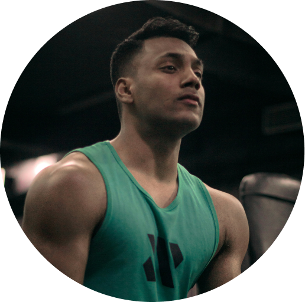

At NutriGenic, we are committed to transforming the meal delivery experience with a focus on
excellence and innovation. Our mission
is to provide a culinary journey unlike any other,
offering exquisitely crafted, premium quality meals developed by
renowned executive chefs in the
culinary world. Every dish is a testament to our dedication to exceptional
taste and utmost
nutritional care. We meticulously craft each meal to meet specific
dietary and fitness needs,
harnessing the power of advanced analytics and the expertise of qualified nutritionists and
fitness professionals to support our customers' wellness goals. With a focus on
culinary artistry
and nutritional precision, we are reshaping the way people
experience and enjoy
convenient, high-quality dining, one meal at a time.


We are an elite team of food, nutrition and fitness experts, driven by a firm commitment to
sustainability in every aspect of our operations. Our dedicated focus on sustainability encompasses
every step, from responsibly sourcing environmentally friendly materials to reducing waste and
minimizing our carbon footprint. We integrate these sustainable practices as fundamental elements of
our
business model, striving to protect natural resources and lessen our impact on the planet. Moreover,
this dedication extends to our partnerships and suppliers, collaboratively promoting environmentally
conscious practices across our entire supply chain.

CORE VALUES
{{item.title}} {{item.subTitle}}
{{item.description}}
OUR FOUNDER
Our culinary journey began with the vision of our
passionate founder,
Taoufik Hannachi, an accomplished professional chef with 18 years of
experience in the culinary world. His culinary expertise and dedication to
crafting exceptional meals form the cornerstone of our mission. Inspired by
a commitment to excellence and a love for creating memorable dining
experiences, Taoufik leads our team of food and fitness professionals. His
innovative spirit and unwavering dedication to customer satisfaction have
propelled us to redefine the meal delivery experience.

From a young age, my interest lay in the joy of life, food, the ultimate happiness. My mother, the
inspiring artwork, indulged my curiosity from a tender age and nurtured this inquisitiveness into a
hunger. The rules I learned at my mother’s stove laid the unwavering foundation for my desire to be
involved in food throughout my life.
Food is my passion. Food is what resonates most deeply with me, with my core, with my sense of self.

OUR TEAM
Our chefs, nutritionists and fitness professionals bring a wealth of experience and knowledge to every meal
we craft. They are dedicated to ensuring that each dish not only delights the palate but also aligns with
our customers' wellness objectives.
Together, we are reshaping the meal delivery experience through a shared passion for excellence, creativity,
and unwavering dedication to our customers' well-being.
Join us as we embark on this flavourful and nourishing journey.